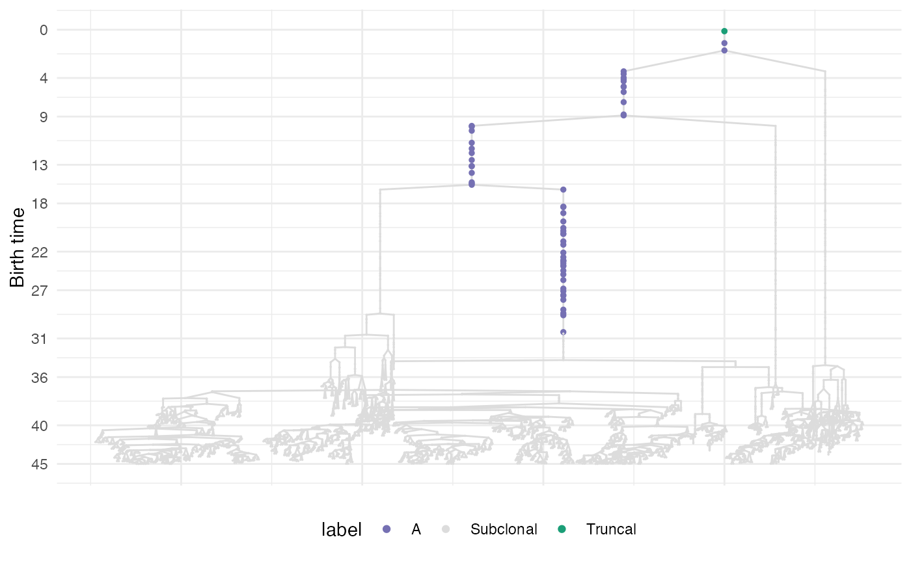
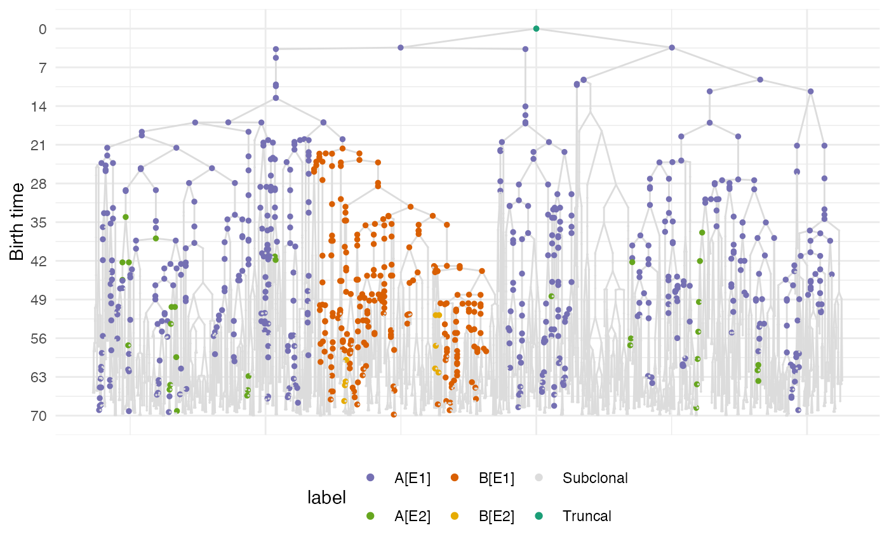

It annotates a plot of cell divisions where branches containing relevant biological events are colored
Arguments
- forest
The original forest object has been derived.
- labels
A data frame annotating the sticks (it can be the output of
get_relevant_branches()). If no labels are provided the output ofget_relevant_branches()is used by default.- cls
A custom list of colors for any stick. If NULL a default palette is chosen.
Examples
sim <- TissueSimulation()
sim$add_mutant("A", c(duplication = 1))
sim$place_cell("A", 500, 500)
sim$run_up_to_size("A",1e4)
#>
[████████████████████████████████████████] 100% [00m:00s] Saving snapshot
sim$add_mutant("B", c(duplication = 3.5))
sim$mutate_progeny(sim$choose_border_cell_in("A"), "B")
sim$run_up_to_size("B",1e4)
#>
[████████████████████████████████████████] 100% [00m:00s] Saving snapshot
bbox <- sim$search_sample(c("A" = 100, "B" = 100), 50, 50)
sim$sample_cells("Sample", bbox$lower_corner, bbox$upper_corner)
forest <- sim$get_sample_forest()
labels <- get_relevant_branches(forest)
plot_sticks(forest, labels)

# build a simulation with epigenetic states
sim <- TissueSimulation(epigenetic_states = c("E1", "E2"))
# add mutant "A" and set its species rates
sim$add_mutant("A",
list(E1 = list(duplication = 0.2, death = 0.1, E2 = 0.01),
E2 = list(duplication = 0.08, death = 0.01, E1 = 0.01)))
# add mutant "B" and set its species rates
sim$add_mutant("B",
list(E1 = list(duplication = 0.3, death = 0.1, E2 = 0.02),
E2 = list(duplication = 0.1, death = 0.01, E1 = 0.01)))
# schedule a mutation from "A" to "B"
sim$schedule_mutation("A", "B", 20)
# place an "A[E1]" cell in the tissue
sim$place_cell("A[E1]", 500, 500)
# run the simulation up to time 70
sim$run_up_to_time(70)
#>
[████████████████████████████████████████] 100% [00m:00s] Saving snapshot
# sample the tissue
bbox <- sim$search_sample(c("A" = 100, "B" = 100), 50, 50)
sim$sample_cells("Sample", bbox$lower_corner, bbox$upper_corner)
# build the sample forest
forest <- sim$get_sample_forest()
plot_sticks(forest)
